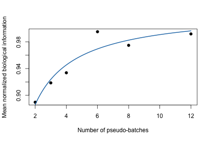

This tutorial shows the batch-effect scaling law added from the GitHub BMMC CITE-seq script:
I = I_inf - C * log(1 - A / m)
where m is the number of batches at fixed total cells.
The original script used paired RNA and ADT modalities. This lightweight tutorial starts from a real Jurkat 10x RNA count block and splits its HVGs into two disjoint gene views. That gives us paired cell-side matrices without shipping a large multimodal object.
batch_effect_mi() estimates biological information from two feature-by-cell
matrices by computing cell-side subspaces and squared canonical correlations.
counts_file <- file.path(
"..", "..", "..",
"outputs", "exploration", "jurkat_glmpca_gaussian_snr_by_n",
"jurkat_glmpca_counts_hvg.csv"
)
counts <- as.matrix(read.csv(counts_file, row.names = 1, check.names = FALSE))
dim(counts)
#> [1] 400 5000
view_a <- counts[seq_len(200), , drop = FALSE]
view_b <- counts[201:400, , drop = FALSE]
cells_demo <- sample(colnames(counts), 600)
bio <- batch_effect_mi(
view_a[, cells_demo, drop = FALSE],
view_b[, cells_demo, drop = FALSE],
r_x = 5,
r_y = 5,
transform_x = "log1p",
transform_y = "log1p"
)
bio[c("mi", "mi_norm", "r_eff")]
#> $mi
#> [1] 4.913267
#>
#> $mi_norm
#> [1] 0.9826535
#>
#> $r_eff
#> [1] 5
sample_batch_cells() samples a balanced number of cells from each selected
batch. The Jurkat block does not come with experimental batch labels, so we
create pseudo-batches by ordering cells by UMI depth and cutting them into
equally sized groups. Real analyses should use an experimental batch or donor
column.
cell_depth <- colSums(counts)
batch_id <- cut(
rank(cell_depth, ties.method = "first"),
breaks = 12,
labels = paste0("depth_batch_", seq_len(12))
)
meta <- data.frame(
batch = as.character(batch_id),
umi_in_hvg_block = cell_depth,
row.names = colnames(counts)
)
sampled <- sample_batch_cells(
meta = meta,
batch_col = "batch",
m_batch = 4,
cells_per_batch = 80,
seed = 1
)
head(sampled$cells)
#> [1] "cell_100214" "cell_86975" "cell_58201" "cell_103076" "cell_26700"
#> [6] "cell_88474"
sampled$batches
#> [1] "depth_batch_6" "depth_batch_12" "depth_batch_4" "depth_batch_1"
For each design point below, we sample cells from a fixed total of 480 cells and vary the number of batches.
run_design <- function(m_batch, rep_id, n_total = 480) {
cells_per_batch <- as.integer(n_total / m_batch)
sampled <- sample_batch_cells(
meta = meta,
batch_col = "batch",
m_batch = m_batch,
cells_per_batch = cells_per_batch,
seed = 1000 + 100 * rep_id + m_batch
)
bio <- batch_effect_mi(
view_a[, sampled$cells, drop = FALSE],
view_b[, sampled$cells, drop = FALSE],
r_x = 5,
r_y = 5,
transform_x = "log1p",
transform_y = "log1p"
)
data.frame(
experiment = "fixed_n_vary_m",
rep = rep_id,
m_batch = m_batch,
cells_per_batch = cells_per_batch,
n_cells = length(sampled$cells),
I_bio = bio$mi,
I_bio_norm = bio$mi_norm
)
}
replicate_results <- do.call(
rbind,
lapply(seq_len(3), function(rep_id) {
do.call(rbind, lapply(c(2, 3, 4, 6, 8, 12), run_design, rep_id = rep_id))
})
)
summary_df <- summarize_batch_effect_results(replicate_results)
summary_df
#> experiment m_batch cells_per_batch n_cells mean_I_bio sd_I_bio
#> 1 fixed_n_vary_m 2 240 480 4.448235 0.25618292
#> 2 fixed_n_vary_m 3 160 480 4.593037 0.42896768
#> 3 fixed_n_vary_m 4 120 480 4.668589 0.30094731
#> 4 fixed_n_vary_m 6 80 480 4.975604 0.22156321
#> 5 fixed_n_vary_m 8 60 480 4.873855 0.08152891
#> 6 fixed_n_vary_m 12 40 480 4.959085 0.10672961
#> se_I_bio mean_I_bio_norm sd_I_bio_norm se_I_bio_norm n_rep_observed
#> 1 0.14790728 0.8896471 0.05123658 0.029581456 3
#> 2 0.24766460 0.9186073 0.08579354 0.049532921 3
#> 3 0.17375201 0.9337178 0.06018946 0.034750402 3
#> 4 0.12791958 0.9951208 0.04431264 0.025583916 3
#> 5 0.04707074 0.9747710 0.01630578 0.009414148 3
#> 6 0.06162037 0.9918171 0.02134592 0.012324074 3
batch_fit <- suppressWarnings(
fit_batch_scaling(
summary_df,
law = "batch_number",
target_col = "mean_I_bio_norm",
min_points = 5
)
)
coef(batch_fit)
#> I_inf C A
#> 1.0273123 0.2160777 -1.8437698
summary(batch_fit)
#> type model x_col y_col n_points ok message I_inf C
#> 1 batch batch_number m_batch I_fit 6 TRUE ok 1.027312 0.2160777
#> A R2 RMSE MAE
#> 1 -1.84377 0.9012202 0.01236638 0.009736167
predict(batch_fit, data.frame(m_batch = c(16, 24, 32)))
#> [1] 1.003746 1.011319 1.015208
plot(batch_fit, xlab = "Number of pseudo-batches", ylab = "Mean normalized biological information")

The companion law uses fixed batch number and varies cells per batch:
I = I_inf - C * log(1 + A / s)
Use the same function with law = "cells_per_batch" and a
cells_per_batch column in the summary table.